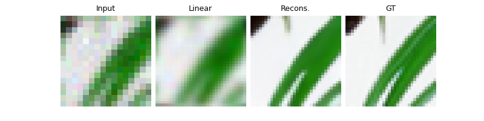
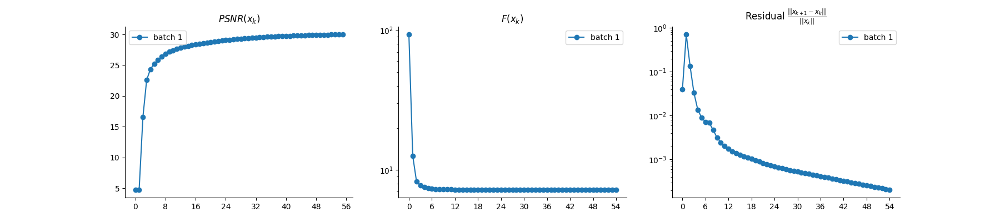

Note
Go to the end to download the full example code
Regularization by Denoising (RED) for Super-Resolution.
We use as plug-in denoiser the Gradient-Step Denoiser (GSPnP) which provides an explicit prior.
Hurault, S., Leclaire, A., & Papadakis, N. “Gradient Step Denoiser for convergent Plug-and-Play” In International Conference on Learning Representations.
import deepinv as dinv
from pathlib import Path
import torch
from torch.utils.data import DataLoader
from deepinv.optim.data_fidelity import L2
from deepinv.optim.prior import RED
from deepinv.optim.optimizers import optim_builder
from deepinv.training_utils import test
from torchvision import transforms
from deepinv.utils.parameters import get_GSPnP_params
from deepinv.utils.demo import load_dataset, load_degradation
Setup paths for data loading and results.
BASE_DIR = Path(".")
ORIGINAL_DATA_DIR = BASE_DIR / "datasets"
DATA_DIR = BASE_DIR / "measurements"
RESULTS_DIR = BASE_DIR / "results"
DEG_DIR = BASE_DIR / "degradations"
# Set the global random seed from pytorch to ensure
# the reproducibility of the example.
torch.manual_seed(0)
device = dinv.utils.get_freer_gpu() if torch.cuda.is_available() else "cpu"
Load base image datasets and degradation operators.
In this example, we use the Set3C dataset and a motion blur kernel from Levin et al. (2009).
dataset_name = "set3c"
img_size = 256 if torch.cuda.is_available() else 32
operation = "super-resolution"
dataset_path = ORIGINAL_DATA_DIR / dataset_name
val_transform = transforms.Compose(
[transforms.CenterCrop(img_size), transforms.ToTensor()]
)
dataset = load_dataset(dataset_name, ORIGINAL_DATA_DIR, transform=val_transform)
# Generate the degradation operator.
kernel_index = 1
kernel_torch = load_degradation(
"kernels_12.npy", DEG_DIR / "kernels", kernel_index=kernel_index
)
kernel_torch = kernel_torch.unsqueeze(0).unsqueeze(
0
) # add batch and channel dimensions
# Use parallel dataloader if using a GPU to fasten training, otherwise, as all computes are on CPU, use synchronous dataloading.
num_workers = 4 if torch.cuda.is_available() else 0
factor = 2 # down-sampling factor
n_channels = 3 # 3 for color images, 1 for gray-scale images
n_images_max = 3 # Maximal number of images to restore from the input dataset
noise_level_img = 0.03 # Gaussian Noise standart deviation for the degradation
p = dinv.physics.Downsampling(
img_size=(n_channels, img_size, img_size),
factor=factor,
filter=kernel_torch,
device=device,
noise_model=dinv.physics.GaussianNoise(sigma=noise_level_img),
)
# Generate a dataset in a HDF5 folder in "{dir}/dinv_dataset0.h5'" and load it.
measurement_dir = DATA_DIR / dataset_name / operation
dinv_dataset_path = dinv.datasets.generate_dataset(
train_dataset=dataset,
test_dataset=None,
physics=p,
device=device,
save_dir=measurement_dir,
train_datapoints=n_images_max,
num_workers=num_workers,
)
dataset = dinv.datasets.HDF5Dataset(path=dinv_dataset_path, train=True)
kernels_12.npy degradation downloaded in degradations/kernels
Computing train measurement vectors from base dataset...
0%| | 0/2 [00:00<?, ?it/s]
100%|██████████| 2/2 [00:00<00:00, 84.49it/s]
Dataset has been saved in measurements/set3c/super-resolution
Setup the PnP algorithm. This involves in particular the definition of a custom prior class.
We use the proximal gradient algorithm to solve the super-resolution problem with GSPnP.
# Parameters of the algorithm to solve the inverse problem
early_stop = True # Stop algorithm when convergence criteria is reached
crit_conv = "cost" # Convergence is reached when the difference of cost function between consecutive iterates is
# smaller than thres_conv
thres_conv = 1e-5
backtracking = True # use backtracking to automatically adjust the stepsize
use_bicubic_init = False # Use bicubic interpolation to initialize the algorithm
batch_size = 1 # batch size for evaluation is necessarily 1 for early stopping and backtracking to work.
# load specific parameters for GSPnP
lamb, sigma_denoiser, stepsize, max_iter = get_GSPnP_params(
operation, noise_level_img, kernel_index
)
params_algo = {"stepsize": stepsize, "g_param": sigma_denoiser, "lambda": lamb}
# Select the data fidelity term
data_fidelity = L2()
# The GSPnP prior corresponds to a RED prior with an explicit `g`.
# We thus write a class that inherits from RED for this custom prior.
class GSPnP(RED):
r"""
Gradient-Step Denoiser prior.
"""
def __init__(self, *args, **kwargs):
super().__init__(*args, **kwargs)
self.explicit_prior = True
def g(self, x, *args, **kwargs):
r"""
Computes the prior :math:`g(x)`.
:param torch.tensor x: Variable :math:`x` at which the prior is computed.
:return: (torch.tensor) prior :math:`g(x)`.
"""
return self.denoiser.potential(x, *args, **kwargs)
method = "GSPnP"
denoiser_name = "gsdrunet"
# Specify the Denoising prior
prior = GSPnP(
denoiser=dinv.models.GSDRUNet(pretrained="download", train=False).to(device)
)
# instantiate the algorithm class to solve the IP problem.
model = optim_builder(
iteration="PGD",
prior=prior,
g_first=True,
data_fidelity=data_fidelity,
params_algo=params_algo,
early_stop=early_stop,
max_iter=max_iter,
crit_conv=crit_conv,
thres_conv=thres_conv,
backtracking=backtracking,
return_aux=True,
verbose=True,
)
Downloading: "https://mycore.core-cloud.net/index.php/s/9EzDqcJxQUJKYul/download?path=%2Fweights&files=GSDRUNet.ckpt" to /home/runner/.cache/torch/hub/checkpoints/GSDRUNet.ckpt
0%| | 0.00/195M [00:00<?, ?B/s]
0%| | 48.0k/195M [00:00<07:10, 474kB/s]
0%| | 104k/195M [00:00<08:54, 382kB/s]
0%| | 208k/195M [00:00<05:22, 632kB/s]
0%| | 344k/195M [00:00<03:49, 890kB/s]
0%| | 568k/195M [00:00<02:40, 1.27MB/s]
0%| | 816k/195M [00:00<02:13, 1.52MB/s]
1%| | 1.09M/195M [00:00<01:44, 1.94MB/s]
1%| | 1.35M/195M [00:00<01:33, 2.18MB/s]
1%| | 1.62M/195M [00:01<01:25, 2.37MB/s]
1%| | 1.95M/195M [00:01<01:15, 2.68MB/s]
1%| | 2.24M/195M [00:01<01:12, 2.77MB/s]
1%|▏ | 2.52M/195M [00:01<01:18, 2.57MB/s]
1%|▏ | 2.78M/195M [00:01<01:16, 2.63MB/s]
2%|▏ | 3.05M/195M [00:01<01:15, 2.66MB/s]
2%|▏ | 3.32M/195M [00:01<01:13, 2.72MB/s]
2%|▏ | 3.61M/195M [00:01<01:11, 2.79MB/s]
2%|▏ | 3.91M/195M [00:01<01:09, 2.87MB/s]
2%|▏ | 4.20M/195M [00:01<01:14, 2.67MB/s]
2%|▏ | 4.48M/195M [00:02<01:12, 2.76MB/s]
2%|▏ | 4.76M/195M [00:02<01:11, 2.79MB/s]
3%|▎ | 5.03M/195M [00:02<01:11, 2.79MB/s]
3%|▎ | 5.31M/195M [00:02<01:10, 2.84MB/s]
3%|▎ | 5.60M/195M [00:02<01:08, 2.88MB/s]
3%|▎ | 5.89M/195M [00:02<01:13, 2.69MB/s]
3%|▎ | 6.18M/195M [00:02<01:11, 2.77MB/s]
3%|▎ | 6.45M/195M [00:02<01:10, 2.78MB/s]
3%|▎ | 6.73M/195M [00:02<01:10, 2.81MB/s]
4%|▎ | 7.02M/195M [00:03<01:09, 2.84MB/s]
4%|▍ | 7.32M/195M [00:03<01:07, 2.90MB/s]
4%|▍ | 7.60M/195M [00:03<01:12, 2.71MB/s]
4%|▍ | 7.88M/195M [00:03<01:11, 2.76MB/s]
4%|▍ | 8.16M/195M [00:03<01:10, 2.79MB/s]
4%|▍ | 8.43M/195M [00:03<01:09, 2.80MB/s]
4%|▍ | 8.72M/195M [00:03<01:08, 2.86MB/s]
5%|▍ | 9.00M/195M [00:03<01:07, 2.88MB/s]
5%|▍ | 9.28M/195M [00:03<01:12, 2.68MB/s]
5%|▍ | 9.58M/195M [00:04<01:09, 2.78MB/s]
5%|▌ | 9.85M/195M [00:04<01:09, 2.80MB/s]
5%|▌ | 10.1M/195M [00:04<01:09, 2.80MB/s]
5%|▌ | 10.4M/195M [00:04<01:08, 2.84MB/s]
5%|▌ | 10.7M/195M [00:04<01:07, 2.87MB/s]
6%|▌ | 11.0M/195M [00:04<01:06, 2.88MB/s]
6%|▌ | 11.2M/195M [00:04<01:11, 2.69MB/s]
6%|▌ | 11.5M/195M [00:04<01:10, 2.73MB/s]
6%|▌ | 11.8M/195M [00:04<01:09, 2.77MB/s]
6%|▌ | 12.1M/195M [00:04<01:08, 2.82MB/s]
6%|▋ | 12.4M/195M [00:05<01:07, 2.83MB/s]
6%|▋ | 12.6M/195M [00:05<01:07, 2.85MB/s]
7%|▋ | 12.9M/195M [00:05<01:11, 2.67MB/s]
7%|▋ | 13.2M/195M [00:05<01:10, 2.69MB/s]
7%|▋ | 13.5M/195M [00:05<01:09, 2.74MB/s]
7%|▋ | 13.7M/195M [00:05<01:08, 2.76MB/s]
7%|▋ | 14.0M/195M [00:05<01:07, 2.79MB/s]
7%|▋ | 14.3M/195M [00:05<01:07, 2.80MB/s]
7%|▋ | 14.6M/195M [00:05<01:07, 2.81MB/s]
8%|▊ | 14.9M/195M [00:05<01:07, 2.79MB/s]
8%|▊ | 15.1M/195M [00:06<01:08, 2.74MB/s]
8%|▊ | 15.4M/195M [00:06<01:07, 2.79MB/s]
8%|▊ | 15.7M/195M [00:06<01:07, 2.79MB/s]
8%|▊ | 16.0M/195M [00:06<01:06, 2.82MB/s]
8%|▊ | 16.2M/195M [00:06<01:06, 2.82MB/s]
8%|▊ | 16.5M/195M [00:06<01:06, 2.83MB/s]
9%|▊ | 16.8M/195M [00:06<01:05, 2.84MB/s]
9%|▉ | 17.1M/195M [00:06<01:07, 2.76MB/s]
9%|▉ | 17.3M/195M [00:06<01:07, 2.75MB/s]
9%|▉ | 17.6M/195M [00:07<01:07, 2.77MB/s]
9%|▉ | 17.9M/195M [00:07<01:07, 2.76MB/s]
9%|▉ | 18.1M/195M [00:07<01:05, 2.83MB/s]
9%|▉ | 18.4M/195M [00:07<01:05, 2.83MB/s]
10%|▉ | 18.7M/195M [00:07<01:05, 2.81MB/s]
10%|▉ | 19.0M/195M [00:07<01:06, 2.78MB/s]
10%|▉ | 19.2M/195M [00:07<01:06, 2.78MB/s]
10%|█ | 19.5M/195M [00:07<01:06, 2.76MB/s]
10%|█ | 19.8M/195M [00:07<01:05, 2.78MB/s]
10%|█ | 20.0M/195M [00:07<01:06, 2.75MB/s]
10%|█ | 20.3M/195M [00:08<01:04, 2.85MB/s]
11%|█ | 20.6M/195M [00:08<01:04, 2.83MB/s]
11%|█ | 20.9M/195M [00:08<01:04, 2.83MB/s]
11%|█ | 21.2M/195M [00:08<01:05, 2.77MB/s]
11%|█ | 21.4M/195M [00:08<01:05, 2.78MB/s]
11%|█ | 21.7M/195M [00:08<01:05, 2.76MB/s]
11%|█▏ | 22.0M/195M [00:08<01:05, 2.76MB/s]
11%|█▏ | 22.2M/195M [00:09<02:13, 1.36MB/s]
12%|█▏ | 22.5M/195M [00:09<01:49, 1.64MB/s]
12%|█▏ | 22.8M/195M [00:09<01:35, 1.88MB/s]
12%|█▏ | 23.1M/195M [00:09<01:24, 2.13MB/s]
12%|█▏ | 23.4M/195M [00:09<01:18, 2.29MB/s]
12%|█▏ | 23.6M/195M [00:09<01:14, 2.41MB/s]
12%|█▏ | 23.9M/195M [00:09<01:10, 2.53MB/s]
12%|█▏ | 24.2M/195M [00:09<01:13, 2.44MB/s]
13%|█▎ | 24.4M/195M [00:09<01:10, 2.54MB/s]
13%|█▎ | 24.7M/195M [00:10<01:07, 2.64MB/s]
13%|█▎ | 25.0M/195M [00:10<01:06, 2.69MB/s]
13%|█▎ | 25.3M/195M [00:10<01:04, 2.75MB/s]
13%|█▎ | 25.6M/195M [00:10<01:03, 2.81MB/s]
13%|█▎ | 25.8M/195M [00:10<01:02, 2.84MB/s]
13%|█▎ | 26.1M/195M [00:10<01:06, 2.66MB/s]
14%|█▎ | 26.4M/195M [00:10<01:04, 2.72MB/s]
14%|█▎ | 26.7M/195M [00:10<01:03, 2.77MB/s]
14%|█▍ | 27.0M/195M [00:10<01:02, 2.79MB/s]
14%|█▍ | 27.2M/195M [00:10<01:02, 2.81MB/s]
14%|█▍ | 27.5M/195M [00:11<01:01, 2.84MB/s]
14%|█▍ | 27.8M/195M [00:11<01:05, 2.66MB/s]
14%|█▍ | 28.1M/195M [00:11<01:03, 2.76MB/s]
15%|█▍ | 28.4M/195M [00:11<01:02, 2.78MB/s]
15%|█▍ | 28.6M/195M [00:11<01:02, 2.80MB/s]
15%|█▍ | 28.9M/195M [00:11<01:01, 2.85MB/s]
15%|█▍ | 29.2M/195M [00:11<01:01, 2.82MB/s]
15%|█▌ | 29.5M/195M [00:11<01:01, 2.82MB/s]
15%|█▌ | 29.7M/195M [00:11<01:04, 2.68MB/s]
15%|█▌ | 30.0M/195M [00:12<01:02, 2.76MB/s]
16%|█▌ | 30.3M/195M [00:12<01:02, 2.78MB/s]
16%|█▌ | 30.6M/195M [00:12<01:01, 2.79MB/s]
16%|█▌ | 30.9M/195M [00:12<01:00, 2.83MB/s]
16%|█▌ | 31.1M/195M [00:12<01:00, 2.82MB/s]
16%|█▌ | 31.4M/195M [00:12<00:59, 2.85MB/s]
16%|█▋ | 31.7M/195M [00:12<01:03, 2.70MB/s]
16%|█▋ | 32.0M/195M [00:12<01:02, 2.75MB/s]
17%|█▋ | 32.2M/195M [00:12<01:01, 2.78MB/s]
17%|█▋ | 32.5M/195M [00:12<01:00, 2.81MB/s]
17%|█▋ | 32.8M/195M [00:13<01:00, 2.83MB/s]
17%|█▋ | 33.1M/195M [00:13<00:59, 2.83MB/s]
17%|█▋ | 33.4M/195M [00:13<00:59, 2.86MB/s]
17%|█▋ | 33.6M/195M [00:13<01:02, 2.70MB/s]
17%|█▋ | 33.9M/195M [00:13<01:01, 2.75MB/s]
18%|█▊ | 34.2M/195M [00:13<01:00, 2.79MB/s]
18%|█▊ | 34.5M/195M [00:13<00:59, 2.81MB/s]
18%|█▊ | 34.8M/195M [00:13<00:58, 2.87MB/s]
18%|█▊ | 35.0M/195M [00:13<00:58, 2.85MB/s]
18%|█▊ | 35.3M/195M [00:14<01:01, 2.71MB/s]
18%|█▊ | 35.6M/195M [00:14<01:01, 2.73MB/s]
18%|█▊ | 35.9M/195M [00:14<00:59, 2.79MB/s]
19%|█▊ | 36.1M/195M [00:14<00:59, 2.79MB/s]
19%|█▊ | 36.4M/195M [00:14<00:59, 2.79MB/s]
19%|█▉ | 36.7M/195M [00:14<00:58, 2.83MB/s]
19%|█▉ | 37.0M/195M [00:14<00:58, 2.85MB/s]
19%|█▉ | 37.2M/195M [00:14<01:00, 2.73MB/s]
19%|█▉ | 37.5M/195M [00:14<00:59, 2.76MB/s]
19%|█▉ | 37.8M/195M [00:14<00:59, 2.75MB/s]
20%|█▉ | 38.1M/195M [00:15<00:58, 2.78MB/s]
20%|█▉ | 38.3M/195M [00:15<00:58, 2.80MB/s]
20%|█▉ | 38.6M/195M [00:15<00:58, 2.81MB/s]
20%|█▉ | 38.9M/195M [00:15<00:57, 2.84MB/s]
20%|██ | 39.2M/195M [00:15<00:57, 2.86MB/s]
20%|██ | 39.4M/195M [00:15<01:00, 2.71MB/s]
20%|██ | 39.7M/195M [00:15<00:59, 2.74MB/s]
21%|██ | 40.0M/195M [00:15<00:59, 2.75MB/s]
21%|██ | 40.3M/195M [00:15<00:58, 2.75MB/s]
21%|██ | 40.5M/195M [00:16<00:57, 2.83MB/s]
21%|██ | 40.8M/195M [00:16<00:56, 2.84MB/s]
21%|██ | 41.1M/195M [00:16<00:56, 2.84MB/s]
21%|██ | 41.4M/195M [00:16<00:58, 2.73MB/s]
21%|██▏ | 41.6M/195M [00:16<00:58, 2.75MB/s]
22%|██▏ | 41.9M/195M [00:16<00:58, 2.73MB/s]
22%|██▏ | 42.2M/195M [00:16<00:57, 2.78MB/s]
22%|██▏ | 42.5M/195M [00:16<00:57, 2.78MB/s]
22%|██▏ | 42.7M/195M [00:16<00:56, 2.80MB/s]
22%|██▏ | 43.0M/195M [00:16<00:56, 2.83MB/s]
22%|██▏ | 43.3M/195M [00:17<00:55, 2.87MB/s]
22%|██▏ | 43.6M/195M [00:17<00:57, 2.75MB/s]
23%|██▎ | 43.8M/195M [00:17<00:57, 2.75MB/s]
23%|██▎ | 44.1M/195M [00:17<00:57, 2.75MB/s]
23%|██▎ | 44.4M/195M [00:17<00:56, 2.77MB/s]
23%|██▎ | 44.6M/195M [00:17<00:56, 2.79MB/s]
23%|██▎ | 44.9M/195M [00:17<00:55, 2.81MB/s]
23%|██▎ | 45.2M/195M [00:17<00:55, 2.83MB/s]
23%|██▎ | 45.5M/195M [00:17<00:56, 2.78MB/s]
23%|██▎ | 45.7M/195M [00:17<00:56, 2.75MB/s]
24%|██▎ | 46.0M/195M [00:18<00:56, 2.75MB/s]
24%|██▍ | 46.3M/195M [00:18<00:56, 2.76MB/s]
24%|██▍ | 46.6M/195M [00:18<00:55, 2.79MB/s]
24%|██▍ | 46.8M/195M [00:18<00:55, 2.79MB/s]
24%|██▍ | 47.1M/195M [00:18<00:54, 2.82MB/s]
24%|██▍ | 47.4M/195M [00:18<00:54, 2.85MB/s]
24%|██▍ | 47.7M/195M [00:18<00:55, 2.77MB/s]
25%|██▍ | 47.9M/195M [00:18<00:55, 2.76MB/s]
25%|██▍ | 48.2M/195M [00:18<00:55, 2.75MB/s]
25%|██▍ | 48.5M/195M [00:18<00:55, 2.78MB/s]
25%|██▌ | 48.8M/195M [00:19<00:54, 2.80MB/s]
25%|██▌ | 49.0M/195M [00:19<00:54, 2.82MB/s]
25%|██▌ | 49.3M/195M [00:19<00:53, 2.85MB/s]
25%|██▌ | 49.6M/195M [00:19<00:54, 2.81MB/s]
26%|██▌ | 49.9M/195M [00:19<00:54, 2.80MB/s]
26%|██▌ | 50.1M/195M [00:19<00:54, 2.76MB/s]
26%|██▌ | 50.4M/195M [00:19<00:54, 2.77MB/s]
26%|██▌ | 50.7M/195M [00:19<00:54, 2.79MB/s]
26%|██▌ | 51.0M/195M [00:19<00:53, 2.81MB/s]
26%|██▋ | 51.2M/195M [00:20<00:52, 2.84MB/s]
26%|██▋ | 51.5M/195M [00:20<00:53, 2.81MB/s]
27%|██▋ | 51.8M/195M [00:20<00:53, 2.79MB/s]
27%|██▋ | 52.1M/195M [00:20<00:54, 2.76MB/s]
27%|██▋ | 52.4M/195M [00:20<00:53, 2.78MB/s]
27%|██▋ | 52.6M/195M [00:20<00:53, 2.79MB/s]
27%|██▋ | 52.9M/195M [00:20<00:53, 2.79MB/s]
27%|██▋ | 53.2M/195M [00:20<00:53, 2.80MB/s]
27%|██▋ | 53.4M/195M [00:20<00:52, 2.81MB/s]
28%|██▊ | 53.7M/195M [00:20<00:53, 2.78MB/s]
28%|██▊ | 54.0M/195M [00:21<00:53, 2.76MB/s]
28%|██▊ | 54.3M/195M [00:21<00:53, 2.75MB/s]
28%|██▊ | 54.5M/195M [00:21<00:52, 2.77MB/s]
28%|██▊ | 54.8M/195M [00:21<00:52, 2.81MB/s]
28%|██▊ | 55.1M/195M [00:21<00:52, 2.80MB/s]
28%|██▊ | 55.4M/195M [00:21<00:52, 2.81MB/s]
29%|██▊ | 55.6M/195M [00:21<00:52, 2.80MB/s]
29%|██▊ | 55.9M/195M [00:21<00:52, 2.75MB/s]
29%|██▉ | 56.2M/195M [00:21<00:52, 2.74MB/s]
29%|██▉ | 56.4M/195M [00:21<00:53, 2.73MB/s]
29%|██▉ | 56.7M/195M [00:22<00:52, 2.74MB/s]
29%|██▉ | 57.0M/195M [00:22<00:52, 2.75MB/s]
29%|██▉ | 57.2M/195M [00:22<00:52, 2.75MB/s]
30%|██▉ | 57.5M/195M [00:22<00:52, 2.74MB/s]
30%|██▉ | 57.8M/195M [00:22<00:52, 2.74MB/s]
30%|██▉ | 58.0M/195M [00:22<00:51, 2.77MB/s]
30%|██▉ | 58.3M/195M [00:22<00:50, 2.81MB/s]
30%|███ | 58.6M/195M [00:22<00:51, 2.78MB/s]
30%|███ | 58.9M/195M [00:22<00:51, 2.77MB/s]
30%|███ | 59.1M/195M [00:23<00:51, 2.77MB/s]
31%|███ | 59.4M/195M [00:23<00:51, 2.78MB/s]
31%|███ | 59.7M/195M [00:23<00:51, 2.77MB/s]
31%|███ | 59.9M/195M [00:23<00:51, 2.76MB/s]
31%|███ | 60.2M/195M [00:23<00:50, 2.79MB/s]
31%|███ | 60.5M/195M [00:23<00:50, 2.79MB/s]
31%|███ | 60.8M/195M [00:23<00:50, 2.81MB/s]
31%|███▏ | 61.0M/195M [00:23<00:49, 2.81MB/s]
31%|███▏ | 61.3M/195M [00:23<00:50, 2.78MB/s]
32%|███▏ | 61.6M/195M [00:23<00:49, 2.79MB/s]
32%|███▏ | 61.9M/195M [00:24<00:50, 2.75MB/s]
32%|███▏ | 62.1M/195M [00:24<00:50, 2.77MB/s]
32%|███▏ | 62.4M/195M [00:24<00:49, 2.80MB/s]
32%|███▏ | 62.7M/195M [00:24<00:49, 2.78MB/s]
32%|███▏ | 63.0M/195M [00:24<00:49, 2.80MB/s]
32%|███▏ | 63.2M/195M [00:24<00:49, 2.79MB/s]
33%|███▎ | 63.5M/195M [00:24<00:49, 2.79MB/s]
33%|███▎ | 63.8M/195M [00:24<00:49, 2.79MB/s]
33%|███▎ | 64.1M/195M [00:24<00:49, 2.78MB/s]
33%|███▎ | 64.3M/195M [00:24<00:49, 2.76MB/s]
33%|███▎ | 64.6M/195M [00:25<00:49, 2.77MB/s]
33%|███▎ | 64.9M/195M [00:25<00:49, 2.77MB/s]
33%|███▎ | 65.1M/195M [00:25<00:48, 2.80MB/s]
34%|███▎ | 65.4M/195M [00:25<00:48, 2.80MB/s]
34%|███▎ | 65.7M/195M [00:25<00:48, 2.78MB/s]
34%|███▍ | 66.0M/195M [00:25<00:48, 2.79MB/s]
34%|███▍ | 66.2M/195M [00:25<00:48, 2.80MB/s]
34%|███▍ | 66.5M/195M [00:25<00:48, 2.77MB/s]
34%|███▍ | 66.8M/195M [00:25<00:48, 2.77MB/s]
34%|███▍ | 67.0M/195M [00:25<00:48, 2.76MB/s]
35%|███▍ | 67.3M/195M [00:26<00:48, 2.78MB/s]
35%|███▍ | 67.6M/195M [00:26<00:47, 2.82MB/s]
35%|███▍ | 67.9M/195M [00:26<00:47, 2.80MB/s]
35%|███▍ | 68.1M/195M [00:26<00:47, 2.78MB/s]
35%|███▌ | 68.4M/195M [00:26<00:47, 2.80MB/s]
35%|███▌ | 68.7M/195M [00:26<00:47, 2.80MB/s]
35%|███▌ | 69.0M/195M [00:26<00:47, 2.80MB/s]
36%|███▌ | 69.2M/195M [00:26<00:47, 2.77MB/s]
36%|███▌ | 69.5M/195M [00:26<00:47, 2.79MB/s]
36%|███▌ | 69.8M/195M [00:27<00:46, 2.79MB/s]
36%|███▌ | 70.0M/195M [00:27<00:47, 2.78MB/s]
36%|███▌ | 70.3M/195M [00:27<00:46, 2.79MB/s]
36%|███▋ | 70.6M/195M [00:27<00:46, 2.82MB/s]
36%|███▋ | 70.9M/195M [00:27<00:46, 2.79MB/s]
37%|███▋ | 71.1M/195M [00:27<00:46, 2.77MB/s]
37%|███▋ | 71.4M/195M [00:27<00:46, 2.76MB/s]
37%|███▋ | 71.7M/195M [00:27<00:46, 2.76MB/s]
37%|███▋ | 71.9M/195M [00:27<00:47, 2.73MB/s]
37%|███▋ | 72.2M/195M [00:27<00:46, 2.78MB/s]
37%|███▋ | 72.5M/195M [00:28<00:46, 2.76MB/s]
37%|███▋ | 72.8M/195M [00:28<00:46, 2.76MB/s]
38%|███▊ | 73.0M/195M [00:28<00:46, 2.76MB/s]
38%|███▊ | 73.3M/195M [00:28<00:46, 2.77MB/s]
38%|███▊ | 73.6M/195M [00:28<00:46, 2.76MB/s]
38%|███▊ | 73.8M/195M [00:28<00:45, 2.78MB/s]
38%|███▊ | 74.1M/195M [00:28<00:45, 2.79MB/s]
38%|███▊ | 74.4M/195M [00:28<00:45, 2.76MB/s]
38%|███▊ | 74.6M/195M [00:28<00:45, 2.76MB/s]
38%|███▊ | 74.9M/195M [00:28<00:45, 2.76MB/s]
39%|███▊ | 75.2M/195M [00:29<00:45, 2.76MB/s]
39%|███▊ | 75.4M/195M [00:29<00:45, 2.75MB/s]
39%|███▉ | 75.7M/195M [00:29<00:45, 2.77MB/s]
39%|███▉ | 76.0M/195M [00:29<00:46, 2.70MB/s]
39%|███▉ | 76.2M/195M [00:29<00:45, 2.72MB/s]
39%|███▉ | 76.5M/195M [00:29<00:45, 2.71MB/s]
39%|███▉ | 76.8M/195M [00:29<00:45, 2.72MB/s]
40%|███▉ | 77.0M/195M [00:29<00:45, 2.71MB/s]
40%|███▉ | 77.3M/195M [00:29<00:45, 2.73MB/s]
40%|███▉ | 77.6M/195M [00:29<00:44, 2.75MB/s]
40%|███▉ | 77.8M/195M [00:30<00:44, 2.75MB/s]
40%|████ | 78.1M/195M [00:30<00:44, 2.72MB/s]
40%|████ | 78.4M/195M [00:30<00:44, 2.74MB/s]
40%|████ | 78.6M/195M [00:30<00:44, 2.76MB/s]
41%|████ | 78.9M/195M [00:30<00:44, 2.76MB/s]
41%|████ | 79.2M/195M [00:30<00:43, 2.78MB/s]
41%|████ | 79.5M/195M [00:30<00:43, 2.79MB/s]
41%|████ | 79.7M/195M [00:30<00:43, 2.76MB/s]
41%|████ | 80.0M/195M [00:30<00:43, 2.76MB/s]
41%|████ | 80.3M/195M [00:31<00:43, 2.76MB/s]
41%|████▏ | 80.5M/195M [00:31<00:43, 2.73MB/s]
41%|████▏ | 80.8M/195M [00:31<00:43, 2.74MB/s]
42%|████▏ | 81.1M/195M [00:31<00:43, 2.76MB/s]
42%|████▏ | 81.3M/195M [00:31<00:43, 2.75MB/s]
42%|████▏ | 81.6M/195M [00:31<00:42, 2.76MB/s]
42%|████▏ | 81.9M/195M [00:31<00:43, 2.75MB/s]
42%|████▏ | 82.1M/195M [00:31<00:42, 2.78MB/s]
42%|████▏ | 82.4M/195M [00:31<00:42, 2.75MB/s]
42%|████▏ | 82.7M/195M [00:31<00:42, 2.76MB/s]
43%|████▎ | 82.9M/195M [00:32<00:42, 2.75MB/s]
43%|████▎ | 83.2M/195M [00:32<00:42, 2.76MB/s]
43%|████▎ | 83.5M/195M [00:32<00:42, 2.75MB/s]
43%|████▎ | 83.8M/195M [00:32<00:42, 2.76MB/s]
43%|████▎ | 84.0M/195M [00:32<00:42, 2.76MB/s]
43%|████▎ | 84.3M/195M [00:32<00:42, 2.75MB/s]
43%|████▎ | 84.5M/195M [00:32<00:41, 2.75MB/s]
44%|████▎ | 84.8M/195M [00:32<00:41, 2.76MB/s]
44%|████▎ | 85.1M/195M [00:32<00:42, 2.74MB/s]
44%|████▍ | 85.3M/195M [00:32<00:41, 2.73MB/s]
44%|████▍ | 85.6M/195M [00:33<00:41, 2.76MB/s]
44%|████▍ | 85.9M/195M [00:33<00:41, 2.73MB/s]
44%|████▍ | 86.1M/195M [00:33<00:41, 2.73MB/s]
44%|████▍ | 86.4M/195M [00:33<00:41, 2.75MB/s]
45%|████▍ | 86.7M/195M [00:33<00:41, 2.76MB/s]
45%|████▍ | 87.0M/195M [00:33<00:40, 2.79MB/s]
45%|████▍ | 87.2M/195M [00:33<00:40, 2.80MB/s]
45%|████▍ | 87.5M/195M [00:33<00:41, 2.73MB/s]
45%|████▌ | 87.8M/195M [00:33<00:40, 2.79MB/s]
45%|████▌ | 88.1M/195M [00:33<00:40, 2.78MB/s]
45%|████▌ | 88.3M/195M [00:34<00:40, 2.79MB/s]
46%|████▌ | 88.6M/195M [00:34<00:39, 2.80MB/s]
46%|████▌ | 88.9M/195M [00:34<00:39, 2.79MB/s]
46%|████▌ | 89.2M/195M [00:34<00:39, 2.80MB/s]
46%|████▌ | 89.4M/195M [00:34<00:39, 2.81MB/s]
46%|████▌ | 89.7M/195M [00:34<00:39, 2.78MB/s]
46%|████▌ | 90.0M/195M [00:34<00:39, 2.81MB/s]
46%|████▋ | 90.3M/195M [00:34<00:39, 2.77MB/s]
47%|████▋ | 90.6M/195M [00:34<00:38, 2.82MB/s]
47%|████▋ | 90.8M/195M [00:35<00:38, 2.80MB/s]
47%|████▋ | 91.1M/195M [00:35<00:38, 2.80MB/s]
47%|████▋ | 91.4M/195M [00:35<00:38, 2.81MB/s]
47%|████▋ | 91.7M/195M [00:35<00:38, 2.79MB/s]
47%|████▋ | 91.9M/195M [00:35<00:38, 2.80MB/s]
47%|████▋ | 92.2M/195M [00:35<00:38, 2.76MB/s]
47%|████▋ | 92.5M/195M [00:35<00:38, 2.81MB/s]
48%|████▊ | 92.8M/195M [00:35<00:38, 2.81MB/s]
48%|████▊ | 93.0M/195M [00:35<00:38, 2.80MB/s]
48%|████▊ | 93.3M/195M [00:35<00:37, 2.81MB/s]
48%|████▊ | 93.6M/195M [00:36<00:38, 2.75MB/s]
48%|████▊ | 93.9M/195M [00:36<00:38, 2.76MB/s]
48%|████▊ | 94.1M/195M [00:36<00:37, 2.79MB/s]
48%|████▊ | 94.4M/195M [00:36<00:37, 2.77MB/s]
49%|████▊ | 94.7M/195M [00:36<00:37, 2.81MB/s]
49%|████▉ | 95.0M/195M [00:36<00:37, 2.82MB/s]
49%|████▉ | 95.2M/195M [00:36<00:37, 2.79MB/s]
49%|████▉ | 95.5M/195M [00:36<00:37, 2.77MB/s]
49%|████▉ | 95.8M/195M [00:36<00:37, 2.74MB/s]
49%|████▉ | 96.1M/195M [00:36<00:37, 2.79MB/s]
49%|████▉ | 96.3M/195M [00:37<00:36, 2.79MB/s]
50%|████▉ | 96.6M/195M [00:37<00:37, 2.77MB/s]
50%|████▉ | 96.9M/195M [00:37<00:37, 2.77MB/s]
50%|████▉ | 97.1M/195M [00:37<00:36, 2.79MB/s]
50%|█████ | 97.4M/195M [00:37<00:36, 2.82MB/s]
50%|█████ | 97.7M/195M [00:37<00:36, 2.76MB/s]
50%|█████ | 98.0M/195M [00:37<00:36, 2.75MB/s]
50%|█████ | 98.2M/195M [00:37<00:36, 2.77MB/s]
51%|█████ | 98.5M/195M [00:37<00:36, 2.79MB/s]
51%|█████ | 98.8M/195M [00:38<00:36, 2.79MB/s]
51%|█████ | 99.1M/195M [00:38<00:36, 2.75MB/s]
51%|█████ | 99.3M/195M [00:38<00:35, 2.79MB/s]
51%|█████ | 99.6M/195M [00:38<00:35, 2.80MB/s]
51%|█████▏ | 99.9M/195M [00:38<00:35, 2.77MB/s]
51%|█████▏ | 100M/195M [00:38<00:36, 2.75MB/s]
52%|█████▏ | 100M/195M [00:38<00:35, 2.77MB/s]
52%|█████▏ | 101M/195M [00:38<00:35, 2.79MB/s]
52%|█████▏ | 101M/195M [00:38<00:35, 2.79MB/s]
52%|█████▏ | 101M/195M [00:38<00:35, 2.77MB/s]
52%|█████▏ | 102M/195M [00:39<00:35, 2.77MB/s]
52%|█████▏ | 102M/195M [00:39<00:35, 2.76MB/s]
52%|█████▏ | 102M/195M [00:39<00:34, 2.79MB/s]
53%|█████▎ | 102M/195M [00:39<00:34, 2.77MB/s]
53%|█████▎ | 103M/195M [00:39<00:34, 2.76MB/s]
53%|█████▎ | 103M/195M [00:39<00:34, 2.77MB/s]
53%|█████▎ | 103M/195M [00:39<00:34, 2.76MB/s]
53%|█████▎ | 103M/195M [00:39<00:34, 2.75MB/s]
53%|█████▎ | 104M/195M [00:39<00:34, 2.73MB/s]
53%|█████▎ | 104M/195M [00:39<00:35, 2.69MB/s]
54%|█████▎ | 104M/195M [00:40<00:35, 2.71MB/s]
54%|█████▎ | 104M/195M [00:40<00:34, 2.74MB/s]
54%|█████▍ | 105M/195M [00:40<00:34, 2.75MB/s]
54%|█████▍ | 105M/195M [00:40<00:34, 2.76MB/s]
54%|█████▍ | 105M/195M [00:40<00:33, 2.78MB/s]
54%|█████▍ | 106M/195M [00:40<00:33, 2.77MB/s]
54%|█████▍ | 106M/195M [00:40<00:33, 2.78MB/s]
54%|█████▍ | 106M/195M [00:40<00:33, 2.78MB/s]
55%|█████▍ | 106M/195M [00:40<00:33, 2.75MB/s]
55%|█████▍ | 107M/195M [00:40<00:33, 2.75MB/s]
55%|█████▍ | 107M/195M [00:41<00:33, 2.76MB/s]
55%|█████▌ | 107M/195M [00:41<00:32, 2.81MB/s]
55%|█████▌ | 107M/195M [00:41<00:32, 2.82MB/s]
55%|█████▌ | 108M/195M [00:41<00:32, 2.79MB/s]
55%|█████▌ | 108M/195M [00:41<00:32, 2.80MB/s]
56%|█████▌ | 108M/195M [00:41<00:32, 2.79MB/s]
56%|█████▌ | 109M/195M [00:41<00:32, 2.79MB/s]
56%|█████▌ | 109M/195M [00:41<00:32, 2.76MB/s]
56%|█████▌ | 109M/195M [00:41<00:32, 2.79MB/s]
56%|█████▌ | 109M/195M [00:42<00:31, 2.80MB/s]
56%|█████▋ | 110M/195M [00:42<00:31, 2.82MB/s]
56%|█████▋ | 110M/195M [00:42<00:32, 2.78MB/s]
57%|█████▋ | 110M/195M [00:42<00:31, 2.81MB/s]
57%|█████▋ | 110M/195M [00:42<00:31, 2.80MB/s]
57%|█████▋ | 111M/195M [00:42<00:31, 2.79MB/s]
57%|█████▋ | 111M/195M [00:42<00:31, 2.78MB/s]
57%|█████▋ | 111M/195M [00:42<00:31, 2.76MB/s]
57%|█████▋ | 112M/195M [00:42<00:30, 2.82MB/s]
57%|█████▋ | 112M/195M [00:42<00:31, 2.78MB/s]
58%|█████▊ | 112M/195M [00:43<00:30, 2.83MB/s]
58%|█████▊ | 112M/195M [00:43<00:30, 2.79MB/s]
58%|█████▊ | 113M/195M [00:43<00:31, 2.75MB/s]
58%|█████▊ | 113M/195M [00:43<00:30, 2.79MB/s]
58%|█████▊ | 113M/195M [00:43<00:30, 2.77MB/s]
58%|█████▊ | 114M/195M [00:43<00:30, 2.81MB/s]
58%|█████▊ | 114M/195M [00:43<00:30, 2.79MB/s]
59%|█████▊ | 114M/195M [00:43<00:29, 2.82MB/s]
59%|█████▊ | 114M/195M [00:43<00:30, 2.79MB/s]
59%|█████▉ | 115M/195M [00:43<00:30, 2.75MB/s]
59%|█████▉ | 115M/195M [00:44<00:30, 2.75MB/s]
59%|█████▉ | 115M/195M [00:44<00:30, 2.76MB/s]
59%|█████▉ | 115M/195M [00:44<00:29, 2.79MB/s]
59%|█████▉ | 116M/195M [00:44<00:29, 2.80MB/s]
60%|█████▉ | 116M/195M [00:44<00:29, 2.80MB/s]
60%|█████▉ | 116M/195M [00:44<00:29, 2.79MB/s]
60%|█████▉ | 117M/195M [00:44<00:29, 2.81MB/s]
60%|█████▉ | 117M/195M [00:44<00:29, 2.78MB/s]
60%|██████ | 117M/195M [00:44<00:29, 2.74MB/s]
60%|██████ | 117M/195M [00:45<00:29, 2.78MB/s]
60%|██████ | 118M/195M [00:45<00:28, 2.80MB/s]
61%|██████ | 118M/195M [00:45<00:28, 2.81MB/s]
61%|██████ | 118M/195M [00:45<00:28, 2.81MB/s]
61%|██████ | 118M/195M [00:45<00:28, 2.80MB/s]
61%|██████ | 119M/195M [00:45<00:28, 2.81MB/s]
61%|██████ | 119M/195M [00:45<00:28, 2.77MB/s]
61%|██████▏ | 119M/195M [00:45<00:28, 2.79MB/s]
61%|██████▏ | 120M/195M [00:45<00:28, 2.81MB/s]
62%|██████▏ | 120M/195M [00:45<00:27, 2.82MB/s]
62%|██████▏ | 120M/195M [00:46<00:28, 2.78MB/s]
62%|██████▏ | 120M/195M [00:46<00:27, 2.79MB/s]
62%|██████▏ | 121M/195M [00:46<00:27, 2.83MB/s]
62%|██████▏ | 121M/195M [00:46<00:28, 2.76MB/s]
62%|██████▏ | 121M/195M [00:46<00:27, 2.79MB/s]
62%|██████▏ | 121M/195M [00:46<00:27, 2.79MB/s]
63%|██████▎ | 122M/195M [00:46<00:27, 2.79MB/s]
63%|██████▎ | 122M/195M [00:46<00:27, 2.81MB/s]
63%|██████▎ | 122M/195M [00:46<00:27, 2.79MB/s]
63%|██████▎ | 123M/195M [00:46<00:27, 2.78MB/s]
63%|██████▎ | 123M/195M [00:47<00:26, 2.81MB/s]
63%|██████▎ | 123M/195M [00:47<00:27, 2.77MB/s]
63%|██████▎ | 123M/195M [00:47<00:26, 2.81MB/s]
64%|██████▎ | 124M/195M [00:47<00:26, 2.79MB/s]
64%|██████▎ | 124M/195M [00:47<00:26, 2.80MB/s]
64%|██████▍ | 124M/195M [00:47<00:39, 1.88MB/s]
64%|██████▍ | 125M/195M [00:47<00:33, 2.20MB/s]
64%|██████▍ | 125M/195M [00:47<00:30, 2.42MB/s]
64%|██████▍ | 125M/195M [00:48<00:27, 2.63MB/s]
64%|██████▍ | 125M/195M [00:48<00:30, 2.38MB/s]
65%|██████▍ | 126M/195M [00:48<00:28, 2.50MB/s]
65%|██████▍ | 126M/195M [00:48<00:27, 2.59MB/s]
65%|██████▍ | 126M/195M [00:48<00:27, 2.66MB/s]
65%|██████▍ | 127M/195M [00:48<00:26, 2.72MB/s]
65%|██████▌ | 127M/195M [00:48<00:25, 2.81MB/s]
65%|██████▌ | 127M/195M [00:48<00:24, 2.84MB/s]
65%|██████▌ | 127M/195M [00:48<00:26, 2.67MB/s]
66%|██████▌ | 128M/195M [00:49<00:25, 2.72MB/s]
66%|██████▌ | 128M/195M [00:49<00:25, 2.76MB/s]
66%|██████▌ | 128M/195M [00:49<00:25, 2.78MB/s]
66%|██████▌ | 129M/195M [00:49<00:24, 2.82MB/s]
66%|██████▌ | 129M/195M [00:49<00:24, 2.86MB/s]
66%|██████▋ | 129M/195M [00:49<00:25, 2.68MB/s]
66%|██████▋ | 129M/195M [00:49<00:25, 2.73MB/s]
67%|██████▋ | 130M/195M [00:49<00:24, 2.77MB/s]
67%|██████▋ | 130M/195M [00:49<00:24, 2.81MB/s]
67%|██████▋ | 130M/195M [00:51<02:31, 447kB/s]
67%|██████▋ | 130M/195M [00:51<01:53, 591kB/s]
67%|██████▋ | 131M/195M [00:52<01:32, 730kB/s]
67%|██████▋ | 131M/195M [00:52<01:10, 952kB/s]
67%|██████▋ | 131M/195M [00:52<00:55, 1.20MB/s]
68%|██████▊ | 132M/195M [00:52<00:44, 1.48MB/s]
68%|██████▊ | 132M/195M [00:52<00:37, 1.75MB/s]
68%|██████▊ | 132M/195M [00:52<00:32, 2.00MB/s]
68%|██████▊ | 132M/195M [00:52<00:32, 2.02MB/s]
68%|██████▊ | 133M/195M [00:52<00:29, 2.21MB/s]
68%|██████▊ | 133M/195M [00:52<00:27, 2.39MB/s]
68%|██████▊ | 133M/195M [00:52<00:25, 2.53MB/s]
69%|██████▊ | 134M/195M [00:53<00:24, 2.64MB/s]
69%|██████▊ | 134M/195M [00:53<00:23, 2.74MB/s]
69%|██████▉ | 134M/195M [00:53<00:22, 2.79MB/s]
69%|██████▉ | 134M/195M [00:53<00:24, 2.58MB/s]
69%|██████▉ | 135M/195M [00:53<00:23, 2.66MB/s]
69%|██████▉ | 135M/195M [00:53<00:23, 2.72MB/s]
69%|██████▉ | 135M/195M [00:53<00:22, 2.79MB/s]
70%|██████▉ | 135M/195M [00:53<00:21, 2.84MB/s]
70%|██████▉ | 136M/195M [00:53<00:21, 2.90MB/s]
70%|██████▉ | 136M/195M [00:54<00:23, 2.60MB/s]
70%|███████ | 136M/195M [00:54<00:22, 2.76MB/s]
70%|███████ | 137M/195M [00:54<00:21, 2.82MB/s]
70%|███████ | 137M/195M [00:54<00:21, 2.86MB/s]
70%|███████ | 137M/195M [00:54<00:23, 2.56MB/s]
71%|███████ | 138M/195M [00:54<00:22, 2.70MB/s]
71%|███████ | 138M/195M [00:54<00:20, 2.88MB/s]
71%|███████ | 138M/195M [00:54<00:20, 2.90MB/s]
71%|███████ | 138M/195M [00:54<00:23, 2.56MB/s]
71%|███████ | 139M/195M [00:55<00:21, 2.76MB/s]
71%|███████▏ | 139M/195M [00:55<00:20, 2.88MB/s]
72%|███████▏ | 139M/195M [00:55<00:19, 2.92MB/s]
72%|███████▏ | 140M/195M [00:55<00:19, 2.94MB/s]
72%|███████▏ | 140M/195M [00:55<00:22, 2.60MB/s]
72%|███████▏ | 140M/195M [00:55<00:20, 2.79MB/s]
72%|███████▏ | 141M/195M [00:55<00:19, 2.91MB/s]
72%|███████▏ | 141M/195M [00:55<00:21, 2.60MB/s]
72%|███████▏ | 141M/195M [00:55<00:20, 2.80MB/s]
73%|███████▎ | 141M/195M [00:56<00:19, 2.83MB/s]
73%|███████▎ | 142M/195M [00:56<00:18, 2.94MB/s]
73%|███████▎ | 142M/195M [00:56<00:21, 2.61MB/s]
73%|███████▎ | 142M/195M [00:56<00:19, 2.76MB/s]
73%|███████▎ | 143M/195M [00:56<00:18, 2.89MB/s]
73%|███████▎ | 143M/195M [00:56<00:18, 2.95MB/s]
74%|███████▎ | 143M/195M [00:56<00:20, 2.61MB/s]
74%|███████▎ | 144M/195M [00:56<00:18, 2.84MB/s]
74%|███████▍ | 144M/195M [00:56<00:18, 2.87MB/s]
74%|███████▍ | 144M/195M [00:57<00:18, 2.92MB/s]
74%|███████▍ | 144M/195M [00:57<00:20, 2.60MB/s]
74%|███████▍ | 145M/195M [00:57<00:19, 2.73MB/s]
75%|███████▍ | 145M/195M [00:57<00:17, 2.90MB/s]
75%|███████▍ | 145M/195M [00:57<00:17, 2.95MB/s]
75%|███████▍ | 146M/195M [00:57<00:19, 2.62MB/s]
75%|███████▍ | 146M/195M [00:57<00:18, 2.74MB/s]
75%|███████▌ | 146M/195M [00:57<00:17, 2.90MB/s]
75%|███████▌ | 147M/195M [00:58<00:17, 2.96MB/s]
75%|███████▌ | 147M/195M [00:58<00:19, 2.62MB/s]
76%|███████▌ | 147M/195M [00:58<00:18, 2.74MB/s]
76%|███████▌ | 147M/195M [00:58<00:17, 2.84MB/s]
76%|███████▌ | 148M/195M [00:58<00:16, 2.98MB/s]
76%|███████▌ | 148M/195M [00:58<00:18, 2.63MB/s]
76%|███████▌ | 148M/195M [00:58<00:17, 2.77MB/s]
76%|███████▋ | 149M/195M [00:58<00:17, 2.84MB/s]
77%|███████▋ | 149M/195M [00:58<00:16, 2.96MB/s]
77%|███████▋ | 149M/195M [00:59<00:18, 2.64MB/s]
77%|███████▋ | 150M/195M [00:59<00:16, 2.80MB/s]
77%|███████▋ | 150M/195M [00:59<00:16, 2.84MB/s]
77%|███████▋ | 150M/195M [00:59<00:15, 2.98MB/s]
77%|███████▋ | 151M/195M [00:59<00:17, 2.60MB/s]
77%|███████▋ | 151M/195M [00:59<00:16, 2.77MB/s]
78%|███████▊ | 151M/195M [00:59<00:15, 2.95MB/s]
78%|███████▊ | 151M/195M [00:59<00:15, 2.95MB/s]
78%|███████▊ | 152M/195M [00:59<00:17, 2.63MB/s]
78%|███████▊ | 152M/195M [01:00<00:44, 1.00MB/s]
78%|███████▊ | 152M/195M [01:00<00:33, 1.34MB/s]
78%|███████▊ | 153M/195M [01:00<00:30, 1.43MB/s]
79%|███████▊ | 153M/195M [01:01<00:25, 1.75MB/s]
79%|███████▉ | 153M/195M [01:01<00:20, 2.14MB/s]
79%|███████▉ | 154M/195M [01:01<00:20, 2.06MB/s]
79%|███████▉ | 154M/195M [01:01<00:18, 2.31MB/s]
79%|███████▉ | 154M/195M [01:01<00:16, 2.62MB/s]
79%|███████▉ | 155M/195M [01:01<00:17, 2.38MB/s]
80%|███████▉ | 155M/195M [01:01<00:16, 2.57MB/s]
80%|███████▉ | 155M/195M [01:01<00:14, 2.88MB/s]
80%|███████▉ | 156M/195M [01:02<00:16, 2.55MB/s]
80%|████████ | 156M/195M [01:02<00:14, 2.77MB/s]
80%|████████ | 156M/195M [01:02<00:13, 3.00MB/s]
80%|████████ | 157M/195M [01:02<00:15, 2.63MB/s]
81%|████████ | 157M/195M [01:02<00:14, 2.79MB/s]
81%|████████ | 157M/195M [01:02<00:12, 3.04MB/s]
81%|████████ | 158M/195M [01:02<00:14, 2.63MB/s]
81%|████████ | 158M/195M [01:02<00:13, 2.79MB/s]
81%|████████▏ | 158M/195M [01:03<00:14, 2.61MB/s]
81%|████████▏ | 159M/195M [01:03<00:13, 2.85MB/s]
82%|████████▏ | 159M/195M [01:03<00:12, 3.02MB/s]
82%|████████▏ | 159M/195M [01:03<00:14, 2.63MB/s]
82%|████████▏ | 160M/195M [01:03<00:12, 2.84MB/s]
82%|████████▏ | 160M/195M [01:03<00:13, 2.63MB/s]
82%|████████▏ | 160M/195M [01:03<00:12, 2.88MB/s]
82%|████████▏ | 161M/195M [01:03<00:11, 3.09MB/s]
83%|████████▎ | 161M/195M [01:04<00:13, 2.69MB/s]
83%|████████▎ | 161M/195M [01:04<00:12, 2.85MB/s]
83%|████████▎ | 162M/195M [01:04<00:13, 2.61MB/s]
83%|████████▎ | 162M/195M [01:04<00:12, 2.80MB/s]
83%|████████▎ | 162M/195M [01:04<00:11, 3.02MB/s]
84%|████████▎ | 163M/195M [01:04<00:12, 2.63MB/s]
84%|████████▎ | 163M/195M [01:04<00:11, 2.87MB/s]
84%|████████▍ | 163M/195M [01:04<00:11, 2.95MB/s]
84%|████████▍ | 164M/195M [01:05<00:12, 2.58MB/s]
84%|████████▍ | 164M/195M [01:05<00:11, 2.79MB/s]
84%|████████▍ | 164M/195M [01:05<00:10, 2.98MB/s]
84%|████████▍ | 165M/195M [01:05<00:12, 2.59MB/s]
85%|████████▍ | 165M/195M [01:05<00:11, 2.82MB/s]
85%|████████▍ | 165M/195M [01:05<00:10, 3.01MB/s]
85%|████████▍ | 166M/195M [01:05<00:11, 2.61MB/s]
85%|████████▌ | 166M/195M [01:05<00:10, 2.77MB/s]
85%|████████▌ | 166M/195M [01:05<00:10, 2.92MB/s]
85%|████████▌ | 166M/195M [01:06<00:11, 2.62MB/s]
86%|████████▌ | 167M/195M [01:06<00:10, 2.80MB/s]
86%|████████▌ | 167M/195M [01:06<00:09, 2.95MB/s]
86%|████████▌ | 167M/195M [01:06<00:10, 2.63MB/s]
86%|████████▌ | 168M/195M [01:06<00:10, 2.82MB/s]
86%|████████▋ | 168M/195M [01:06<00:09, 3.02MB/s]
86%|████████▋ | 168M/195M [01:06<00:10, 2.64MB/s]
87%|████████▋ | 169M/195M [01:06<00:09, 2.80MB/s]
87%|████████▋ | 169M/195M [01:07<00:08, 3.03MB/s]
87%|████████▋ | 169M/195M [01:07<00:10, 2.63MB/s]
87%|████████▋ | 170M/195M [01:07<00:09, 2.78MB/s]
87%|████████▋ | 170M/195M [01:07<00:08, 2.98MB/s]
87%|████████▋ | 170M/195M [01:07<00:09, 2.61MB/s]
88%|████████▊ | 171M/195M [01:07<00:09, 2.80MB/s]
88%|████████▊ | 171M/195M [01:07<00:08, 2.98MB/s]
88%|████████▊ | 171M/195M [01:07<00:09, 2.61MB/s]
88%|████████▊ | 172M/195M [01:08<00:08, 2.81MB/s]
88%|████████▊ | 172M/195M [01:08<00:08, 2.97MB/s]
88%|████████▊ | 172M/195M [01:08<00:08, 2.62MB/s]
89%|████████▊ | 173M/195M [01:08<00:08, 2.82MB/s]
89%|████████▉ | 173M/195M [01:08<00:07, 2.98MB/s]
89%|████████▉ | 173M/195M [01:08<00:08, 2.62MB/s]
89%|████████▉ | 174M/195M [01:08<00:07, 2.82MB/s]
89%|████████▉ | 174M/195M [01:08<00:07, 2.96MB/s]
89%|████████▉ | 174M/195M [01:08<00:07, 3.05MB/s]
90%|████████▉ | 175M/195M [01:09<00:07, 2.66MB/s]
90%|████████▉ | 175M/195M [01:09<00:07, 2.76MB/s]
90%|████████▉ | 175M/195M [01:09<00:06, 2.99MB/s]
90%|█████████ | 175M/195M [01:09<00:07, 2.60MB/s]
90%|█████████ | 176M/195M [01:09<00:07, 2.78MB/s]
90%|█████████ | 176M/195M [01:09<00:06, 3.00MB/s]
91%|█████████ | 176M/195M [01:09<00:07, 2.63MB/s]
91%|█████████ | 177M/195M [01:09<00:06, 2.79MB/s]
91%|█████████ | 177M/195M [01:10<00:06, 3.01MB/s]
91%|█████████ | 177M/195M [01:10<00:06, 2.63MB/s]
91%|█████████▏| 178M/195M [01:10<00:06, 2.78MB/s]
91%|█████████▏| 178M/195M [01:10<00:05, 3.01MB/s]
92%|█████████▏| 178M/195M [01:10<00:06, 2.61MB/s]
92%|█████████▏| 179M/195M [01:10<00:05, 2.88MB/s]
92%|█████████▏| 179M/195M [01:10<00:05, 2.98MB/s]
92%|█████████▏| 179M/195M [01:10<00:06, 2.60MB/s]
92%|█████████▏| 180M/195M [01:11<00:05, 2.87MB/s]
92%|█████████▏| 180M/195M [01:11<00:05, 2.99MB/s]
93%|█████████▎| 180M/195M [01:11<00:05, 2.58MB/s]
93%|█████████▎| 181M/195M [01:11<00:05, 2.81MB/s]
93%|█████████▎| 181M/195M [01:11<00:05, 2.57MB/s]
93%|█████████▎| 181M/195M [01:11<00:04, 2.82MB/s]
93%|█████████▎| 182M/195M [01:11<00:04, 3.04MB/s]
93%|█████████▎| 182M/195M [01:11<00:05, 2.63MB/s]
94%|█████████▎| 182M/195M [01:12<00:04, 2.87MB/s]
94%|█████████▍| 183M/195M [01:12<00:04, 2.60MB/s]
94%|█████████▍| 183M/195M [01:12<00:04, 2.80MB/s]
94%|█████████▍| 183M/195M [01:12<00:03, 3.03MB/s]
94%|█████████▍| 184M/195M [01:12<00:04, 2.63MB/s]
94%|█████████▍| 184M/195M [01:12<00:04, 2.81MB/s]
95%|█████████▍| 184M/195M [01:12<00:03, 2.97MB/s]
95%|█████████▍| 185M/195M [01:12<00:04, 2.59MB/s]
95%|█████████▍| 185M/195M [01:13<00:03, 2.82MB/s]
95%|█████████▌| 185M/195M [01:13<00:03, 3.03MB/s]
95%|█████████▌| 186M/195M [01:13<00:03, 2.63MB/s]
95%|█████████▌| 186M/195M [01:13<00:03, 2.84MB/s]
96%|█████████▌| 186M/195M [01:13<00:02, 2.99MB/s]
96%|█████████▌| 187M/195M [01:13<00:03, 2.60MB/s]
96%|█████████▌| 187M/195M [01:13<00:02, 2.89MB/s]
96%|█████████▌| 187M/195M [01:13<00:02, 2.96MB/s]
96%|█████████▋| 188M/195M [01:14<00:02, 2.57MB/s]
97%|█████████▋| 188M/195M [01:14<00:02, 2.92MB/s]
97%|█████████▋| 188M/195M [01:14<00:02, 2.99MB/s]
97%|█████████▋| 189M/195M [01:14<00:02, 2.61MB/s]
97%|█████████▋| 189M/195M [01:14<00:02, 2.89MB/s]
97%|█████████▋| 189M/195M [01:14<00:01, 2.97MB/s]
97%|█████████▋| 190M/195M [01:14<00:02, 2.56MB/s]
97%|█████████▋| 190M/195M [01:14<00:01, 2.65MB/s]
98%|█████████▊| 190M/195M [01:14<00:01, 2.78MB/s]
98%|█████████▊| 190M/195M [01:15<00:01, 2.84MB/s]
98%|█████████▊| 191M/195M [01:15<00:01, 2.60MB/s]
98%|█████████▊| 191M/195M [01:15<00:01, 2.71MB/s]
98%|█████████▊| 191M/195M [01:15<00:01, 2.75MB/s]
98%|█████████▊| 192M/195M [01:15<00:01, 2.85MB/s]
99%|█████████▊| 192M/195M [01:15<00:01, 2.91MB/s]
99%|█████████▊| 192M/195M [01:15<00:01, 2.65MB/s]
99%|█████████▉| 192M/195M [01:15<00:00, 2.74MB/s]
99%|█████████▉| 193M/195M [01:15<00:00, 2.77MB/s]
99%|█████████▉| 193M/195M [01:16<00:00, 2.87MB/s]
99%|█████████▉| 193M/195M [01:16<00:00, 2.94MB/s]
99%|█████████▉| 194M/195M [01:16<00:00, 2.65MB/s]
100%|█████████▉| 194M/195M [01:16<00:00, 2.74MB/s]
100%|█████████▉| 194M/195M [01:16<00:00, 2.82MB/s]
100%|█████████▉| 194M/195M [01:16<00:00, 2.92MB/s]
100%|██████████| 195M/195M [01:16<00:00, 2.66MB/s]
Evaluate the model on the problem.
We evaluate the PnP algorithm on the test dataset, compute the PSNR metrics and plot reconstruction results.
save_folder = RESULTS_DIR / method / operation / dataset_name
wandb_vis = False # plot curves and images in Weight&Bias.
plot_metrics = True # plot metrics. Metrics are saved in save_folder.
plot_images = True # plot images. Images are saved in save_folder.
dataloader = DataLoader(
dataset, batch_size=batch_size, num_workers=num_workers, shuffle=False
)
test(
model=model,
test_dataloader=dataloader,
physics=p,
device=device,
plot_images=plot_images,
save_folder=RESULTS_DIR / method / operation / dataset_name,
plot_metrics=plot_metrics,
verbose=True,
wandb_vis=wandb_vis,
plot_only_first_batch=False, # By default only the first batch is plotted.
)
- 
- 

Processing data of operator 1 out of 1
0%| | 0/3 [00:00<?, ?it/s]Iteration 26, current converge crit. = 9.03E-06, objective = 1.00E-05
33%|███▎ | 1/3 [00:03<00:07, 3.73s/it]Iteration 54, current converge crit. = 9.84E-06, objective = 1.00E-05
67%|██████▋ | 2/3 [00:09<00:04, 4.79s/it]Iteration 22, current converge crit. = 8.61E-06, objective = 1.00E-05
100%|██████████| 3/3 [00:12<00:00, 4.25s/it]
100%|██████████| 3/3 [00:12<00:00, 4.29s/it]
Test PSNR: Linear rec.: 6.06+-1.18 dB | Model: 29.26+-1.57 dB.
(29.255969365437824, 1.5749008109846732, 6.060149669647217, 1.18362178934248)
Total running time of the script: (1 minutes 33.729 seconds)